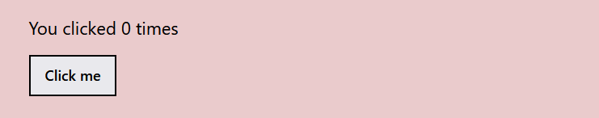

Learning Goals
At the end of this Tutorial, you will be able to:
- Understand that React components cannot change the values of their props.
- Understand the difference between stateful (Container) functions and stateless (Presentational) in React.
- Understand the roles of state and hooks in responding to user interactions and network updates.
- Use the useState and useEffect hooks in a basic React app.
State and hooks
In the previous Tutorial, you saw that React props are immutable. Their value cannot be changed.
But what if you need variables that might change later? For example, in response to user actions or server responses?
To handle application UIs that are dynamic and change over time, React uses the concepts of state and hooks.
The state is a built-in React object that is used to contain data or information about a component. A few points about state:
- A component’s state can be modified based on user actions, network changes or whatever.
- Every time the state of an object changes, React re-renders the component to the browser.
- The state object must be initialised.
- The state object can store multiple properties.
- For functional components, the useState() method is used to change the value of the state object in response to event handlers, server responses, or prop changes. It also instructs React to re-render the component (and any children) with the new, updated state.
- The equivalent method for class-based components is called setState().
Here are the fundamental differences between state and props:

In summary, props are inputs passed down from a parent component to its child component. On the other hand, states are variables defined and managed within the component.
In React, a component should never change its own props directly. Only a parent component can change them by passing down different arguments from a higher level.
A component, however, can change its state at any time.
In React, a stateful component is a component that holds some state. Such components are often called Container or Smart components.
Stateless components, by contrast, have no state. They simply return what is given to them via props. They are also called Presentational or Dumb components.
Reactjs.org says "A common pattern is to create several stateless components that just render data, and have a stateful component above them in the hierarchy that passes its state to its children via props. The stateful component encapsulates all of the interaction logic, while the stateless components take care of rendering data in a declarative way."
A component's state is very similar to a locally declared variable in a JavaScript function. The state containing the properties of the component can only be modified inside of the component. The content of the state is changed by the components event handlers to trigger updates to the user interface. When the state's content changes the component re-renders.
The useState() method and array destructuring
Here’s how you define a function component state:
import React, {useState} from React
function ParentComponent() {
// Declare and initialise three new state variables
const [name, setName] = useState("John");
const [count, setCount] = useState(0);
const [age, setAge] = useState(42);
}
Calling the useState() method returns two items of any array.
const [something, setSomething] = useState(<initial value>)
The two items of this array destructuring statement are:
- something: The state variable. You set this to the initial state on the RHS of the statement.
- setSomething: The update function can change something to another value, according to user interaction or network update.
For example:
function handleClick() {
setName('Paul');
}
Or
function handleClick() {
setCount(42);
}
The useState function is an example of what is called in React a 'hook'. These functions let you use React's state feature in functional components.
You can pass both state (something) and its update function (setSomething) into any child component as a prop:
import React, {useState} from React
function ParentComponent() {
const [name, setName] = useState("John");
return <ChildComponent name={name} setName={setName} />;
}
React will store the next state, render your component again with the new value(s), and update the UI.
When a child component needs the state to change, you can do so by calling on the setName function. In the following example, a button changes the value of name when it is clicked:

Working with a Stateful Component
Follow these steps to build a basic stateful component in React with the useState() hook.
- In your minimal-app, add a new component file called HookCounter.js in the /src folder.
- Enter the following in the file:
import { useState } from 'react' export default function HookCounter () { // Declare and initialise state variable const [count, setCount] = useState(0); return ( <> <section> <p>You clicked {count} times</p> <button className = "btn btn-solid" onClick={ () => setCount(count + 1) }>Click me</button> </section> </> ) } - Update your App.js file with the import statement below.
import HookCounter from './HookCounter';
- Add this component as the last child component:
<HookCounter />
The web browser output should look as shown below.
In this example, clicking the button increments the number in the count state variable.
The example uses an inline arrow function, with the following general format:
<button onClick={() => { /* some action */ }} />
<button onClick={() => { /* another action */ }} />
Hooks and the useEffect() method
The useEffect hook lets you perform side effects in function components. In the example below, we added a new feature to our counter: we set the document title to a custom message that includes the number of clicks.
import { useState } from 'react'
export default function HookCounter () {
// Declare and initialise state variable
const [count, setCount] = useState(0);
// Update the document title using the browser API
useEffect(() => { document.title = `You clicked ${count} times`; });
return (
<>
<section>
<p>You clicked {count} times</p>
<button className = "btn btn-solid" onClick={ () => setCount(count + 1) }>Click me</button>
</section>
</>
)
}